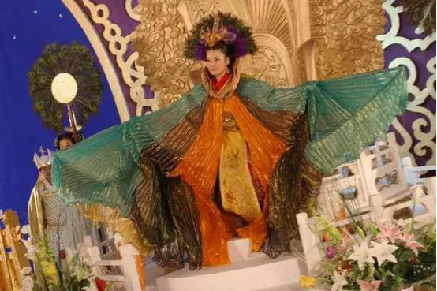

那些年，我们一起追的造型real雷人的古装剧！
也许是最近几年国产雷剧看多了，现在觉得小时候看的《少年包青天》、《春光灿烂猪八戒》、《武林外史》等都倍儿好看！但是，总有那么几部神一样的存在的剧，小时候看的津津有味，但在现在看来造型real雷人啊！
《欢天喜地七仙女》可能是当时看的超认真，所以就没在意造型！现在一看，森森的觉得当时能完整看到结局真是不可思议！
1
2
3
4
5
6
7
8
9
10
11
12
13
14
15
16
17
18
19
20
21
22
23
24
25
26
27
28
29
30
31
32
33
来源：今日头条环球侃客